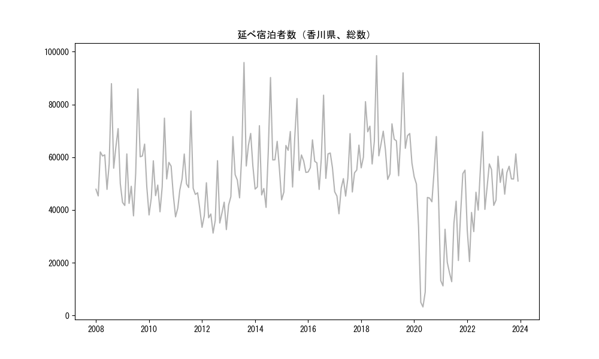
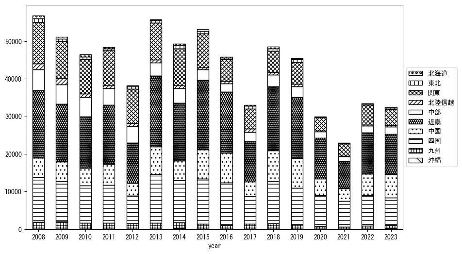
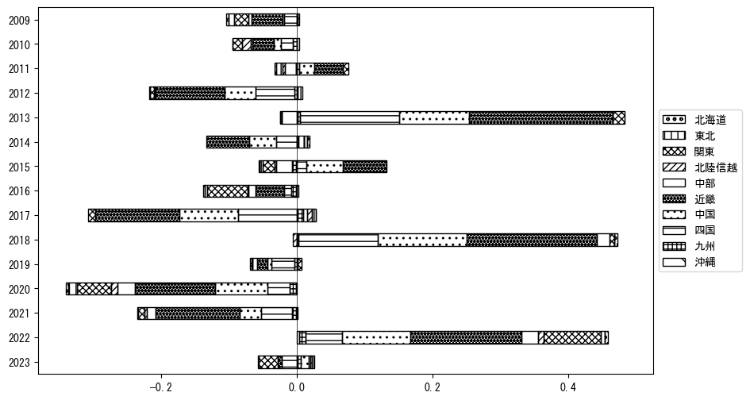
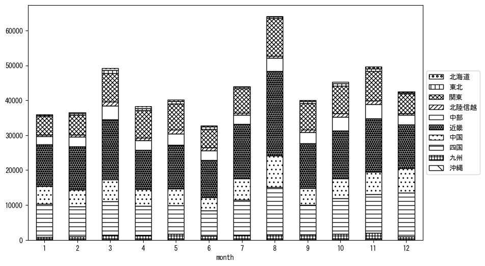
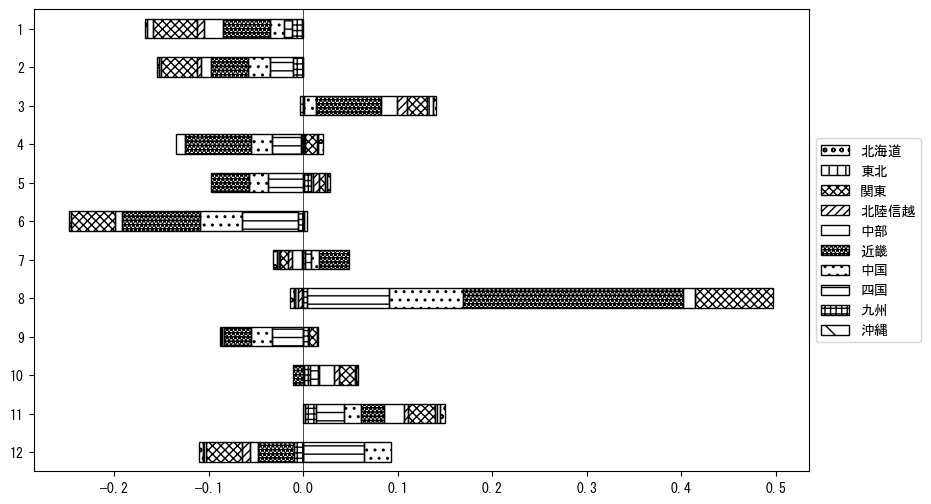

-
トップ
-
香川県
香川県
１．延べ宿泊者（総数）の推移
時系列グラフ

図１：香川県内の従業員数100人以上の宿泊施設での延べ宿泊者数（国外、居住地不詳を含む総数）。
基本統計量
表１：従業員数100人以上の宿泊施設での延べ宿泊者の総数（国外、および居住地不詳を含む）に関する基本統計量。単位は人。平均は１か月あたりの平均値を表す。図１に対応。
| 2008年 |
59,187 |
11,840 |
45,322 (2月) |
87,888 (8月) |
| 2009年 |
54,107 |
13,462 |
37,779 (6月) |
85,905 (8月) |
| 2010年 |
50,934 |
10,077 |
38,111 (1月) |
74,807 (8月) |
| 2011年 |
49,641 |
10,710 |
37,391 (1月) |
77,519 (8月) |
| 2012年 |
39,374 |
7,932 |
31,240 (6月) |
58,688 (8月) |
| 2013年 |
58,996 |
14,679 |
41,864 (1月) |
95,893 (8月) |
| 2014年 |
57,954 |
13,631 |
40,983 (6月) |
90,212 (8月) |
| 2015年 |
59,545 |
10,853 |
43,831 (1月) |
82,249 (8月) |
| 2016年 |
59,591 |
8,952 |
47,792 (6月) |
83,519 (8月) |
| 2017年 |
51,479 |
8,495 |
38,555 (3月) |
68,932 (8月) |
| 2018年 |
68,217 |
11,817 |
55,973 (1月) |
98,501 (8月) |
| 2019年 |
65,217 |
11,024 |
51,594 (1月) |
91,991 (8月) |
| 2020年 |
37,764 |
20,971 |
3,245 (5月) |
67,835 (11月) |
| 2021年 |
29,380 |
15,866 |
11,215 (2月) |
55,111 (12月) |
| 2022年 |
44,761 |
13,537 |
20,451 (2月) |
69,649 (8月) |
| 2023年 |
52,029 |
6,087 |
41,734 (1月) |
61,257 (11月) |
２．宿泊者数の重心（年平均の推移）
図２：香川県内の従業員数100人以上の宿泊施設での宿泊者数（国外、居住地不詳を除く）の重心（年平均の推移）。
全画面表示
重心の前年平均からの移動距離と方位、および緯度・経度
表２：重心の前年平均からの移動距離と方位、および緯度・経度。図２に対応。
| 2008年 |
— |
— |
35.0042 |
135.9044 |
| 2009年 |
西南西 |
7.4km |
34.9695 |
135.8355 |
| 2010年 |
東 |
3.8km |
34.9722 |
135.8767 |
| 2011年 |
西南西 |
16.5km |
34.8915 |
135.7250 |
| 2012年 |
東北東 |
36.3km |
34.9914 |
136.1028 |
| 2013年 |
西南西 |
55.2km |
34.8134 |
135.5386 |
| 2014年 |
東北東 |
27.3km |
34.9213 |
135.8070 |
| 2015年 |
西南西 |
30.5km |
34.8275 |
135.4938 |
| 2016年 |
西南西 |
27.3km |
34.7589 |
135.2072 |
| 2017年 |
東北東 |
43.3km |
34.9217 |
135.6380 |
| 2018年 |
西南西 |
41.2km |
34.7865 |
135.2183 |
| 2019年 |
東 |
5.9km |
34.7880 |
135.2826 |
| 2020年 |
南西 |
18.7km |
34.6656 |
135.1417 |
| 2021年 |
北東 |
11.1km |
34.7220 |
135.2417 |
| 2022年 |
東北東 |
10.5km |
34.7584 |
135.3472 |
| 2023年 |
西 |
15.1km |
34.7334 |
135.1851 |
運輸局別延べ宿泊者数
時系列（年平均）

図３：香川県内の従業員数100人以上の宿泊施設での１か月あたり平均宿泊者数（国外、居住地不詳を除く）の運輸局別内訳。
寄与度（前年からの変化率に対する）

図４：香川県内の従業員数100人以上の宿泊施設での運輸局別宿泊者数（国外、居住地不詳を除く）から求めた寄与度。
３．宿泊者数の重心（月別）
図５：香川県内の従業員数100人以上の宿泊施設での宿泊者数（国外、居住地不詳を除く）の重心（月別）。観測期間は2008年1月から2023年12月まで。
全画面表示
全期間（2008年1月～2023年12月）の平均と月別平均の比較
表３：全期間の平均から月別平均までの移動距離と方位、および緯度・経度。図５に対応。
| 全期間 |
— |
— |
34.8453 |
135.5341 |
| 1月 |
西南西 |
19.8km |
34.7643 |
135.3415 |
| 2月 |
西南西 |
4.9km |
34.8221 |
135.4884 |
| 3月 |
東北東 |
17.0km |
34.9291 |
135.6902 |
| 4月 |
東北東 |
18.7km |
34.9278 |
135.7126 |
| 5月 |
東北東 |
15.1km |
34.9117 |
135.6782 |
| 6月 |
北東 |
5.0km |
34.8712 |
135.5792 |
| 7月 |
西南西 |
12.8km |
34.7833 |
135.4159 |
| 8月 |
南西 |
9.1km |
34.7785 |
135.4768 |
| 9月 |
東北東 |
11.5km |
34.8718 |
135.6562 |
| 10月 |
北東 |
6.4km |
34.8801 |
135.5897 |
| 11月 |
北東 |
4.6km |
34.8790 |
135.5633 |
| 12月 |
西南西 |
31.9km |
34.7252 |
135.2171 |
運輸局別延べ宿泊者数
月別平均（2008年1月～2023年12月）

図６：香川県内の従業員数100人以上の宿泊施設での宿泊者数（国外、居住地不詳を除く）の運輸局別内訳（月別）。
寄与度（全期間の平均から月別平均への変化率に対する）

図７：香川県内の従業員数100人以上の宿泊施設での運輸局別宿泊者数（国外、居住地不詳を除く）から求めた寄与度（月別）。
４．データのダウンロード
出典：観光庁「宿泊旅行統計調査」に収録された「施設所在地別、居住地別延べ宿泊者数（従業員数100人以上の施設）」
国土地理院「白地図（地理院タイル）」（図２と図５）